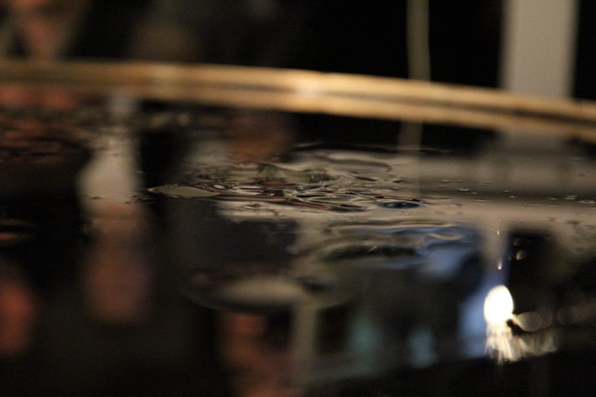
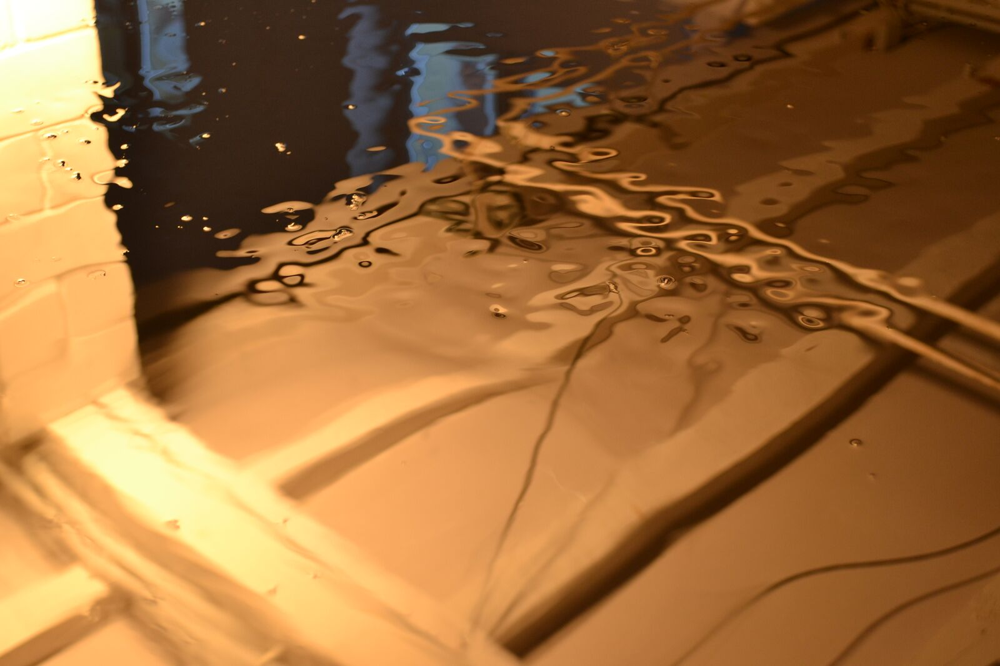
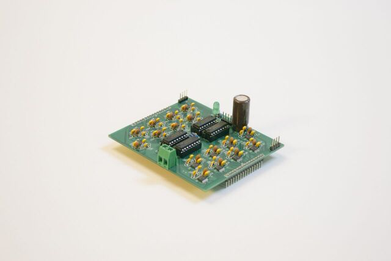
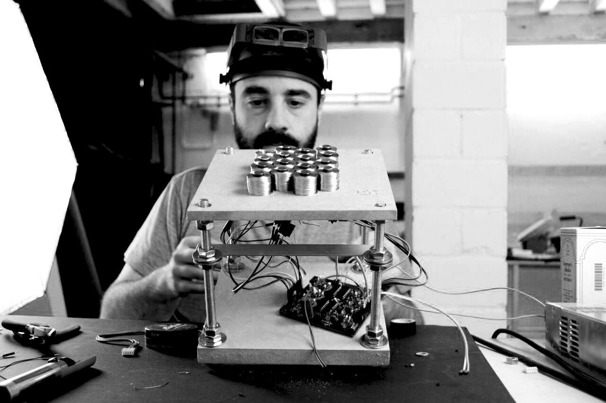
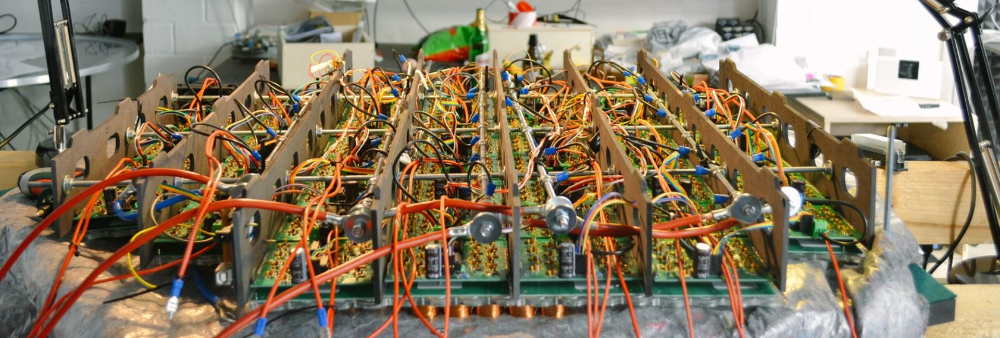
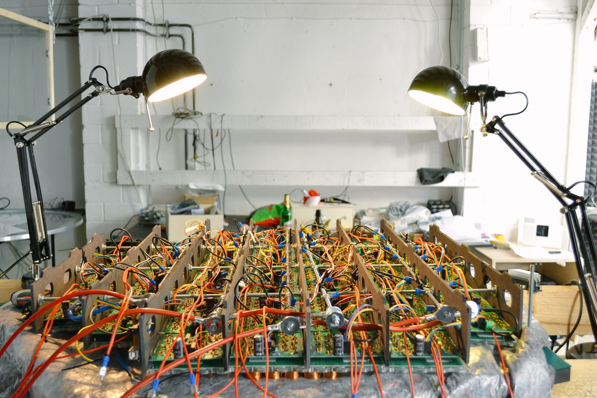
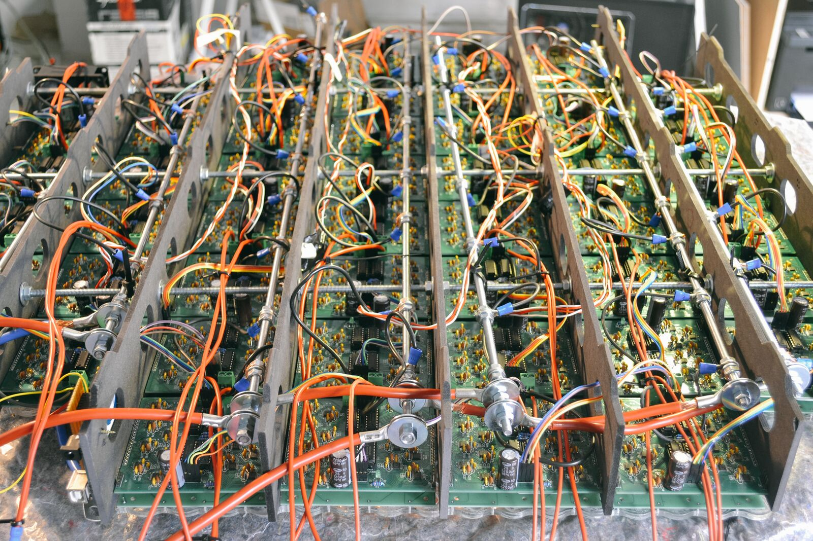
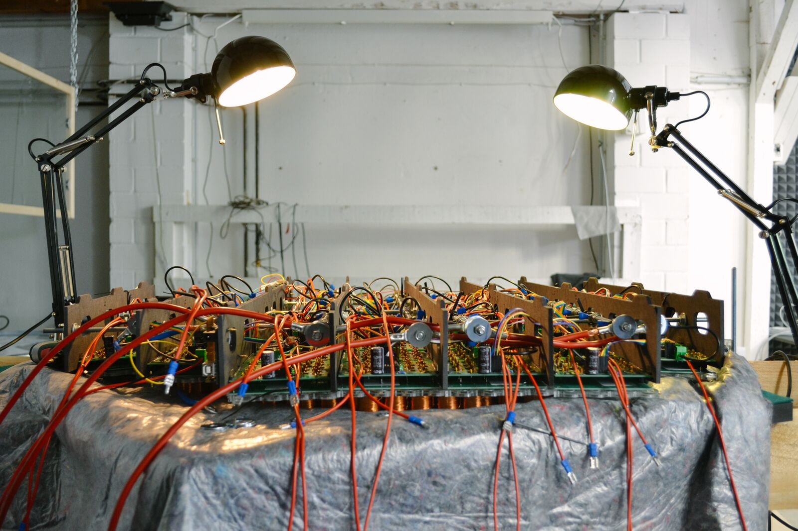

Sidiros
A machine manipulating magnetic fields on a surface, to instantly create sculptures out of solidified ferrofluid.
Sidiros is one of my favourite projects that never quite happened. It uses the real-time creation of magnetic fields to manipulate ferrofluid into an always-transforming live sculpture, realised over two on-again-off-again years during an artistic residency at Artificial Rome. The premise: a person walks up to a tank filled with ferrofluid, gets face-tracked, and their face is rendered back to them in solidified ferrofluid.

A 16-by-16 grid makes for a very low resolution to depict a face. To compensate, taking advantage of the display's physical properties, software was built to change the polarity of the electromagnets — detecting lines of continuance in the incoming image and creating similar lines of ferrofluid extrusion, rather than simple dots.
Under field control, the ferrofluid slicks into filaments and blooms across the tank, resolving into pattern and back into stillness.


Driving that many electromagnets in a confined space needed a versatile custom circuit — able to drive 32 unidirectional electromagnets or motors of up to 1 amp each, controlled via shift registers with just 4 lines of code from an Arduino. Daisy-chaining boards over 4 wires, we're currently driving 160 bipolar magnets from a single Arduino, with headroom to run boards in parallel if a motor needs more than 1 amp.



The tank sits on a ring of laser-cut dividers, each pairing a driver board with its own bank of wound electromagnets, cabled together into a single grid.




Developed over two on-again-off-again years as a self-initiated project during an artist residency at Artificial Rome, and shown to visitors gathered around the tank.